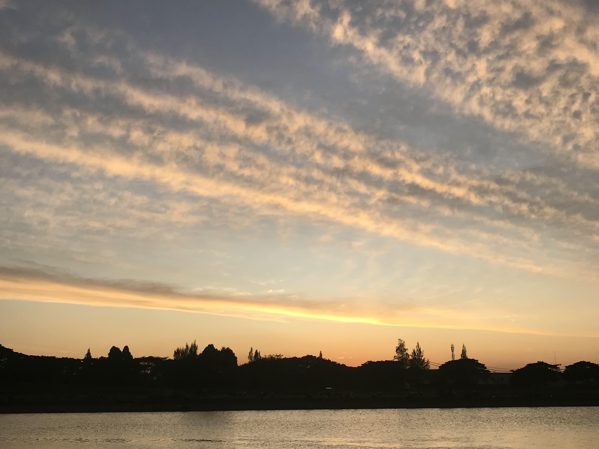
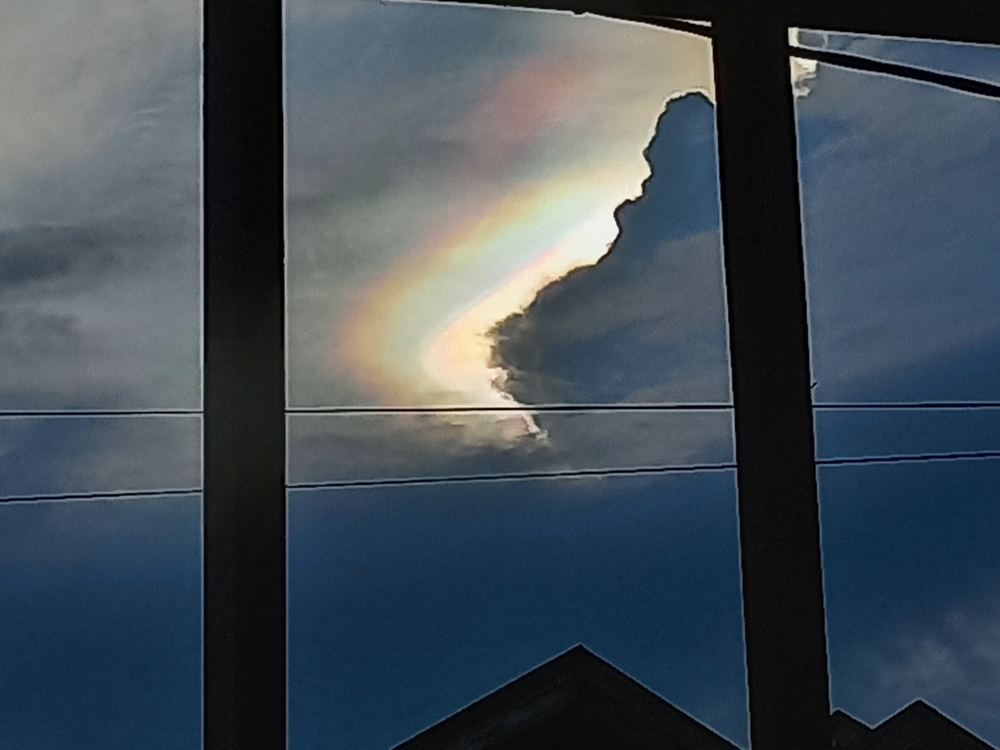

Astrophile
Saya suka sekali melihat langit, terutama saat senja. Bagi saya, langit adalah salah satu bukti nyata akan kebesaran dan kekuasaan Allah SWT. Warna-warnya yang indah membuat saya merasa tenang dan damai. Ini adalah koleksi foto terbaik yang saya diambil, Selamat menikmati!

